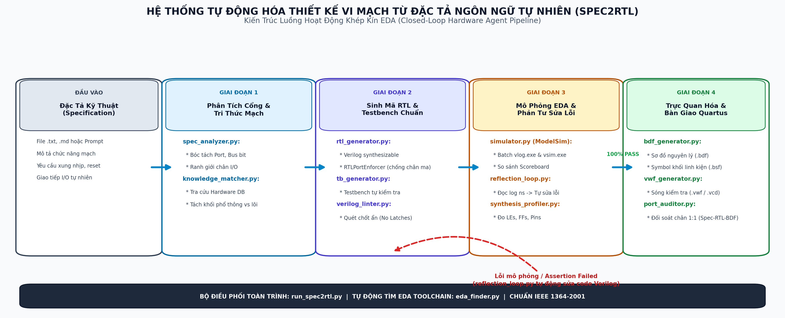
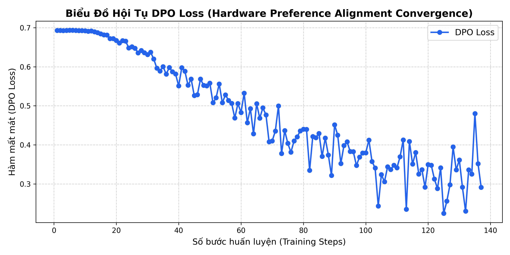
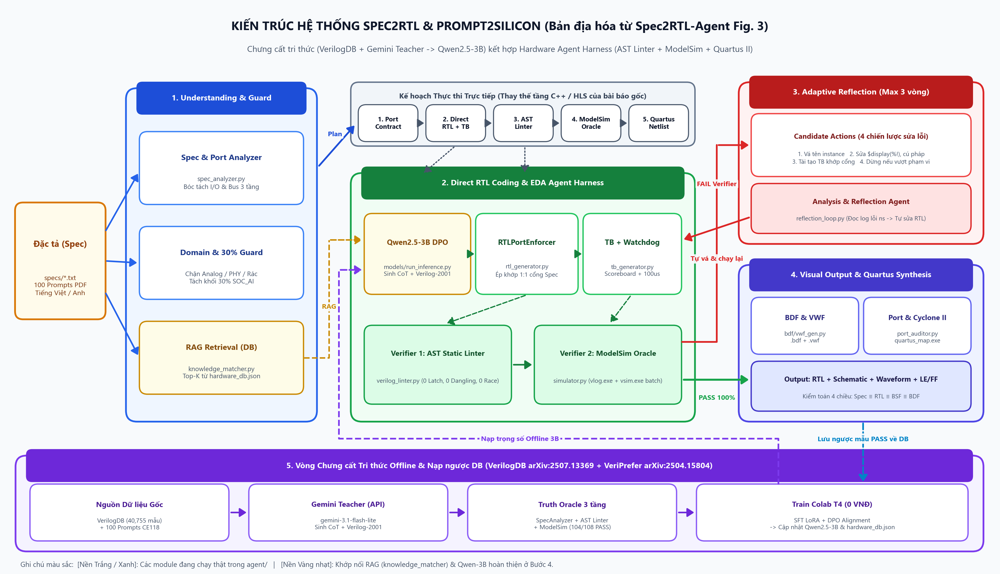

Chuyển hóa đặc tả ngôn ngữ tự nhiên (.txt, .md) thành mã Verilog synthesizable chuẩn IEEE 1364-2001, tự động mô phỏng ModelSim, tự sửa lỗi và xuất sơ đồ nguyên lý Quartus II 13.0sp1.

docs/images/pipeline_architecture_horizontal.pngInferred Latch), cô lập chân vào (Dangling Pin), hoặc gán = trong khối tuần tự gây Race Condition.Giải phóng kỹ sư khỏi 70% khối lặp lại để tập trung tối ưu 30% lõi đột phá.
button_debouncerbutton_debouncer (vượt ngoài 25 mẫu cứng ban đầu).DANGLING_INPUT: Chân đầu vào btn_in bị cô lập hoàn toàn, không đi vào logic xử lý.Không thể viết tay hàng nghìn template → Bắt buộc phải:
Gộp hardware_db.json (539), CE118 Suite (prepare_dataset_group1.py) & VeriPrefer kèm CoT 3 bước.
Biên dịch thật từng mẫu bằng vlog.exe, quét check_linter() & khử trùng MD5 ➔ 1,098 mẫu sạch.
build_dpo_dataset.py đột biến tạo 1,098 cặp phạt lỗi chân lơ lửng, chốt ẩn, race.
Unsloth 4-bit trên Colab T4: SFT LoRA (lr=2e-4) nối tiếp DPO (beta=0.1, lr=5e-6).
Xuất adapter (~114.25 MB) vào models/, nạp suy luận qua run_inference.py bảo mật IP.
training/dataset_clean_verified.json (SFT) & training/dataset_dpo_preference.json (DPO)
PASS_100_MODELSIM_VLOG
knowledge_base/hardware_db.json (539 mẫu): NVIDIA VerilogEval (156), AbiralArch CVDP (119), Verilog-Instruct-60k (112), CityU HK VeriPrefer (100), HKUST RTLLM (50), Spec2RTL Lib (2).prepare_dataset_group1.py (3,094 dòng): Gắn generate_cot_explanation() 3 bước cho 6 specs/*.txt, 8 nhóm Full-Scale Aug, 9 nhóm Advanced CE118 (CRC, Bin↔Gray, Crossbar), & Protocols/Coprocessors (SPI, UART RX, VGA, PWM, FIFO).integrate_veriprefer.py: Nạp thêm rtllm2.json (50 bài) & veriloghuman.json (40 bài đầu) từ CatIIIIIIII/VeriPrefer.filter_dataset_with_modelsim.py)vlog.exe -work work (timeout 10s, returncode == 0, có -- Compiling, không ** Error:/** Fatal:).check_linter() + khử trùng lặp theo id & hash MD5 code chuẩn hóa.
*100% mẫu trong dataset_clean_verified.json đạt trạng thái PASS_100_MODELSIM_VLOG & CLEAN_0_LATCH_0_DANGLING_PIN.
Chosen vs Rejected Bằng Đột Biến Tiêm LỗiSFT chỉ giúp mô hình bắt chước văn phong code; theo hướng tiếp cận VeriPrefer, cần cặp đối lập Chosen / Rejected để hàm phạt DPO triệt tiêu trực tiếp các lỗi vi mạch đặc thù.
build_dpo_dataset.py)mutate_inject_dangling_pin (933 cặp): Cô lập tín hiệu vào/ra khỏi thân logic (bắt đúng ca lỗi button_debouncer).mutate_inject_latch (86 cặp): Xóa nhánh default: hoặc else trong khối tổ hợp always @(*).mutate_inject_blocking_assignment (56 cặp): Đổi <= thành = trong khối tuần tự posedge clk.SYNTAX_TRUNCATED (18) & FUNCTIONAL_BUG (5).dataset_dpo_preference.json)| Nhóm lỗi bị phạt (Rejected) | Số cặp | Tỷ lệ |
|---|---|---|
DANGLING_PIN | 933 | 85.0% |
INFERRED_LATCH | 86 | 7.8% |
BLOCKING_IN_SEQUENTIAL | 56 | 5.1% |
SYNTAX_TRUNCATED + FUNCTIONAL_BUG | 18 + 5 | 2.1% |
Qwen2.5-Coder-3B (SFT LoRA → DPO) & Offlineunsloth/Qwen2.5-Coder-3B-Instruct-bnb-4bit (4-bit, max_seq=2048).r=16, alpha=16, dropout=0, 7 target projections, adamw_8bit, effective batch = 8 (2×4).train_spec2rtl_qwen3b_colab.ipynb
qwen-2.51 epoch, lr=2e-4, warmup=5train_spec2rtl_qwen3b_dpo_colab.ipynb
ref_model=Nonebeta=0.1, lr=5e-6, max_len=1024models/)models/qwen2.5_3b_verilog_lora/ & models/qwen2.5_3b_verilog_dpo/ (mỗi adapter_model.safetensors ~114.25 MB, peft 0.21.2).models/run_inference.py: Suy luận local (temp=0.2, top_p=0.9), có Domain Guard & fallback về agent/rtl_generator.py.
docs/dpo_loss_convergence.png — 137 steps: Loss giảm ~0.693 ➔ ~0.29--use-distilled)knowledge_matcher.py): Hybrid BM25 + 3-gram Jaccard lấy Top-K từ hardware_db.json & Teacher CoT.models/run_inference.py): Domain Guard → gắn ngữ cảnh use_rag=True cho Qwen2.5-3B DPO, fallback an toàn về RTLGenerator.run_spec2rtl.py)spec_analyzer.py (3 tầng) + cầu nối --use-distilled + RTLPortEnforcer.enforce() + tb_generator.py.verilog_linter.py (AST Linter) → simulator.py + reflection_loop.py (ModelSim max 3 vòng)..bdf, .vwf, port_auditor, synthesis_profiler) & gọi save_verified_design() lưu ngược mẫu pass vào hardware_db.json.
Bản địa hóa từ Fig. 3 (Spec2RTL-Agent) — Hybrid BM25 RAG + --use-distilled + Lưu ngược hardware_db.jsonagent/spec_analyzer.py)remove_vietnamese_accents).check_unsupported_domain() chặn 3 nhóm ngoài miền RTL:
is_30_percent_architecture(): Chặn sinh 1-prompt nguyên khối cho hệ thống phức hợp SOC_AI (top_soc, systolic array, dma+relu+ai).extract_ports() 3 tầng: Bảng Markdown → Danh sách bullet/số → Văn xuôi.agent/verilog_linter.py)check_dangling_pins(): Bắt DANGLING_INPUT & UNASSIGNED_OUTPUT.check_inferred_latches_and_races(): Bắt INFERRED_LATCH (case thiếu default, if thiếu else), BLOCKING_IN_SEQUENTIAL (= trong posedge/negedge), NONBLOCKING_IN_COMBINATIONAL.lint_check(): Kiểm tra cân bằng begin/end, case/endcase, module/endmodule & %! trong $display.simulator.py & reflection_loop.py)EDASimulator gọi ModelSim/Icarus (timeout=60s), kiểm tra chặt biên dịch lẫn runtime (FAIL, MISMATCH, Failed Assertions).ReflectionAgent chạy tối đa max_retries=3 vòng tự vá lỗi (tên instance, %! trong $display, dấu phẩy, đồng bộ Testbench khớp cổng).Cyclone II EP2C35F672C6)bdf_generator.py & vwf_generator.py: Tạo .qpf/.qsf, Symbol .bsf, Schematic .bdf và Waveform.vwf từ file .vcd ModelSim.PortAuditor.audit(): Đối soát bất biến 4 chiều Spec ≡ RTL ≡ BSF ≡ BDF.SynthesisProfiler: Chạy quartus_map.exe (60s) đọc .map.summary, có dự phòng estimate_static_resources().
Nguồn: reports/06_VeriPrefer_ClosedLoop_Feedback.md (44% ➔ 92% ➔ 98% ➔ 100%).
| # | Module | ModelSim / AST | LEs | FFs | Pins | Thời gian |
|---|---|---|---|---|---|---|
| 1 | uart_tx_8bit | PASS / 0 lỗi | 28 | 17 | 13 | 26.5s |
| 2 | button_debouncer | PASS / 0 lỗi | 6 | 6 | 5 | 7.65s |
| 3 | bcd_to_7seg_anode | PASS / 0 lỗi | 7 | 0 | 11 | 4.81s |
| 4 | canh_bao_an_ninh... | PASS / 0 lỗi | 4 | 4 | 9 | 4.82s |
| 5 | decoder_3to8 | PASS / 0 lỗi | 8 | 0 | 12 | 6.56s |
| 6 | digital_lock_fsm | PASS / 0 lỗi | 25 | 9 | 14 | 4.55s |
Đối soát trực tiếp từ Quartus .map.summary (uart_tx_8bit: 28 LEs = 20 comb, 17 reg).
button_debouncer — Triệt Tiêu Hoàn Toàn Lỗi Chân Lơ Lửngpython agent/run_spec2rtl.py specs/b.txt --gui
Inputs: clk, rst, btn_in | Outputs: btn_clean, btn_pressed_pulse
always @(posedge clk or posedge rst) begin
if (rst) begin
shift_reg <= 3'b000;
btn_clean <= 1'b0;
btn_pressed_pulse <= 1'b0;
end else begin
shift_reg <= {shift_reg[1:0], btn_in}; // Nối trực tiếp btn_in!
if (shift_reg == 3'b111) btn_clean <= 1'b1;
else if (shift_reg == 3'b000) btn_clean <= 1'b0;
btn_clean_prev <= btn_clean;
btn_pressed_pulse <= (btn_clean && !btn_clean_prev);
end
end
DANGLING_INPUT).sim/button_debouncer.vcd khớp 100%.sch_button_debouncer.bdf & Waveform.vwf.bcd_to_7seg_anode[3:0] bcd (0–9).[6:0] seg (Active-low {a,b,c,d,e,f,g}; giá trị > 9 xuất 7'b1111111).python agent/run_spec2rtl.py specs/c.txt --gui
always @(*) có đầy đủ nhánh default: seg = 7'b1111111; → 0 Inferred Latches.0..9 và ngoài dải 10..15 trên ModelSim GUI.sch_bcd_to_7seg_anode.bdfWaveform.vwf6 nguồn + CE118 Suite → ModelSim lọc 1,098 mẫu sạch (99.8%) → 1,098 cặp DPO → LoRA & DPO trên Colab T4 (0 VNĐ) chạy offline.
Domain Guard chặn ngoài miền & SOC_AI; RTLPortEnforcer & AST Linter triệt tiêu chốt ẩn, chân lơ lửng và race condition.
ModelSim + ReflectionAgent tự sửa lỗi tối đa 3 vòng; xuất đủ Project Quartus II, .bdf, .vwf, PortAuditor, SynthesisProfiler.
6/6 Benchmark (54.89s), 5/5 AST Linter, 20/20 Robustness Battery, khắc phục triệt để ca button_debouncer.
Qwen2.5-Coder-3B DPO offline trở thành bộ sinh mặc định trực tiếp trong luồng chính của agent/run_spec2rtl.py trên máy có GPU/NPU.docs/100_Prompt_Thiet_Ke_Mach.pdf).